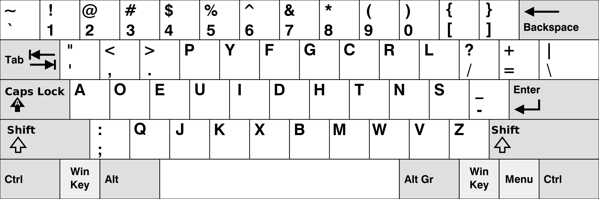

And learn touch typing
Dvorak layout
After some attempts of using Colemak I decided to learn the Dvorak keyboard layout, mainly because it better rendered an easy to remember structure in my head. I see the inherent logic in this layout, hence it is easier to learn.
Here are the things I deem helpful for memorizing keys on the Dvorak keyboard:
- Vowels are all in the home row on the left side.
- Period and comma are comfortably at the top row above vowels, not at the bottom row which is considered to be harder to reach.
- Letters CRL at the top right remind of an abbreviation for a Control key.
- ‘ Y ‘ is phonetically close to ‘ i ‘ as well as ‘ g ‘ to ‘ h ‘, and you can find them located above each other. Letters ‘ v ‘ and ‘ w ‘ also fall in this category with the only difference that they are placed next to each other.
- ‘ Z ‘ is in the last position as in the alphabet. Also ‘ z ‘ is under ‘ s ‘, and they are kinda similar graphically and phonetically.
- ‘ BMW ‘ doesn’t need explanation.
- ‘ X ‘ is almost in the middle as if x-ing sign where people cross the middle of the road.
I started learning the Dvorak keyboard on October 3, 2016. I am writing this using it after ten days of half an hour every day practice, v e r y slowly BUT I’m touch typing . Today is October 12, 2016.